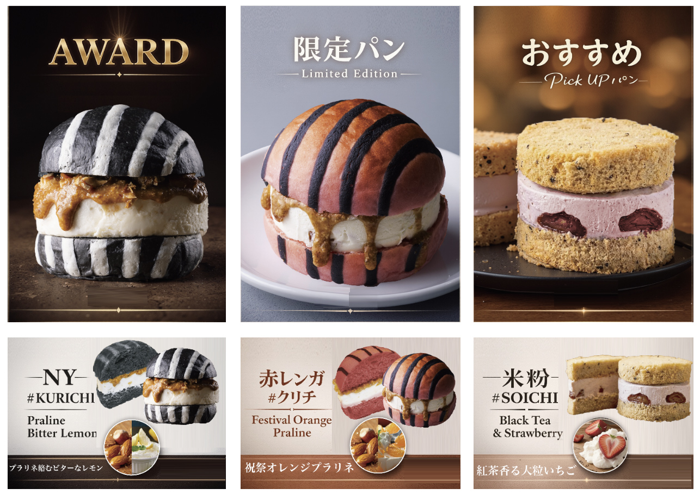

← Press Release 一覧へ
横浜パンフェスで話題の #クリチ が「てくてくパンまつり」神戸に登場

横浜で話題を集めたクリームチーズバーガー「#クリチ」が、神戸の「てくてくパンまつり」に登場します。 関西のパン好きの皆さまに、Vsw #クリチ の独自のおいしさを直接お届けする、待望の機会となります。
開催概要
- イベント：てくてくパンまつり（神戸）
- 出店ブランド：Vsw #クリチ
- 提供予定商品：NY#クリチ（チョコ・クランベリー＆ナッツ）をはじめ、定番ラインナップ
- エリア：関西・神戸
横浜での実績を、関西へ
2026年3月に開催された「横浜パンのフェス 2026」アワードでは、Vsw #クリチ がシルバー賞を受賞しました。色鮮やかな見た目と、濃厚なクリームチーズ × 自由な素材の組み合わせが多くの来場者に支持され、期間中は長い列が絶えない人気ぶりでした。
「もっと近くで食べたい」という関西のファンからの声にお応えし、今回の神戸出店が実現しました。パン好きの街・神戸で、#クリチ の世界観をいちばん鮮度の高い状態でお届けします。
ひと口ほおばると、色とりどりの素材と濃厚クリームチーズが重なって、いつものパンとは違う"発見"があります。関西の皆さまにもぜひ体験していただきたい味です。
こんな方におすすめ
- 新感覚のパン・スイーツを探しているパンフェス巡りファンの方
- SNSで話題の #クリチ をリアルで味わってみたい方
- 関西ではまだ常設販売のない #クリチ を、この機会に楽しみたい方
当日は売り切れが予想されます。最新の販売状況・会場詳細については、公式Instagram @kurichi.jp および TikTok @kurichi.jp で随時お知らせいたします。お早めのご来場をおすすめします。
本件に関するお問い合わせ
取材・メディア掲載・法人コラボレーションに関するご相談は、お問い合わせフォーム よりお気軽にお寄せください。